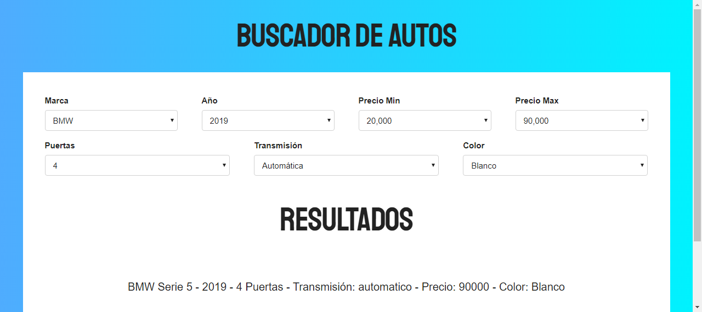

<div class="section animated fadeIn">
        <h2 >Buscador de autos</h2>
        <div class="contenedor" >
              
                <div class="row">
       
                    <div class="contimg col-md-5 col-12">
            
            <div class="contbtn pt-5">
                    <a [routerLink]="['/home']"  class="btn btn-block text-center btn-outline-info " >Volver</a>
            </div>
     
                    </div>
                    <div class="p-2 col-md-5 col-12">
                        <p>Esta app es un buscador por filtro algo reactivo que permite buscar modelo y auto</p>
                        
            
                        
                    </div>
                </div>
            </div>
            
</div>

